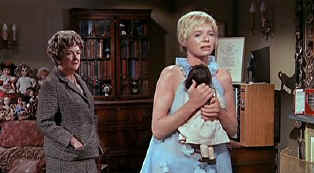

|
Killing
of Sister George/B+,B+ |
|
Anchor
Bay/1968/140m/WS 1.85 |
By Gary
Morris
Robert
Aldrich ranks with Samuel Fuller and Nicholas Ray as one of the
"golden boys" of postwar commercial cinema whose
formal chops and aggressive social critique made that period so
exciting. By the late ‘60s and early ‘70s, when culture gave
way to counterculture, conventional wisdom has it that all three
were washed up. That opinion can be supported for Ray, who made
no films at that time. Fuller’s star had fallen with the
butchered Shark (1967) and the enjoyable but minor Dead
Pigeon on Beethoven Street (1972). But Aldrich was arguably
at the peak of his powers, with a string of brilliant, demanding
and not always commercially successful films that, taken as a
unit, outstrip such earlier classics of his as The Big Knife,
Kiss Me Deadly, and Whatever Happened to Baby Jane?
This rich period included megahits (The Dirty Dozen,
1967), scorching attacks on Hollywood (The Legend of Lylah
Clare, 1968) and American ideals (The Grissom Gang,
1971), and the key "lesbian picture" of that era, The
Killing of Sister George (1968).
 |
| George
tweaks Childie. ©Anchor Bay |
Sister George, now available in an
excellent widescreen transfer on DVD (no extras), was one of
Aldrich’s personal favorites, but also one of his most
problematic in its production and reception. The huge success of
The Dirty Dozen gave him the
money to start his own studio in August 1968. "The
Associates and Aldrich," as the company was called, would
allow him the freedom to tackle more personal projects, and
first up was Frank Marcus’s hit play The Killing of Sister
George. This controversial property was a good fit for
Aldrich, who was always drawn to outsiders and the ways they
manage (or fail) to survive in a crass culture that won’t
tolerate truths that aren’t sugar-coated.
The
"killing" in the title is a metaphorical death –
that of "Sister George," a smarmy apple-cheeked
do-gooder who stars in a sentimental BBC series about village
life. "George" is played in the series by June
Buckridge (Beryl Reid), a brassy, bitchy, hard-drinking bull
dyke who’s the antithesis of the sickeningly sweet character
she plays. In spite of the enormous popularity of George, her
"death" is inevitable due to the constant
embarrassments dealt the BBC by the woman who plays her. Her
indecencies are quite public; they include enraged walkouts from
the set, drunken binges, and most egregiously, an assault –
which Aldrich treats as high comedy – on two novitiate nuns in
a taxi.
George
(I’ll refer to her as "George" throughout this
review, as the film does) has a much younger lover, Alice aka
"Childie" (Susannah York), who collects dolls and is
generally dim; a good friend in the dominatrix next door Betty
Thaxter (Patricia Medina); and a nemesis at the BBC, the
powerful Mercy Croft (Coral Browne), a more respectable dyke who
secretly covets Childie and is the constant bringer of ill
tidings for poor Sister George.
Much
of the film is taken up with the strange domestic relations
between George and Childie. George is insanely jealous of
Childie and verbally, sometimes physically, violent with her.
When Childie causes her some anxiety (which George mostly
generates herself), George forces Childie to recite a little
contrition speech and eat the butt of a cigar while on her
knees. During a visit with Mercy Croft, George becomes
hysterical over some mindless chitchat between Mercy and Childie
about scones. She screams at Childie to shut up, and then pelts
her with scones. Even the comic sequences have a thrillingly
nasty edge, as when the duo are dressed as Laurel and Hardy for
a visit to the local gay bar and their horseplay becomes ever
rowdier.
A mere plot synopsis might suggest the
film is an exercise in grimness and that George is an
unsympathetic, even monstrous, character, but Aldrich in fact
treats much of the action as exceptionally black comedy and
makes George the most sympathetic person in the drama, for the
simple reason that she’s the only "real" person in a
sea of fakes.
This
idea of reality vs. fakery is one of Aldrich’s great themes,
and nowhere is it more fully fleshed out than in Sister
George. George, in spite of being in a career that calls for
constant pretense, is disgusted by the lies by which everyone
around her lives. She puts all kinds of spirit into her
performance as the jolly Sister George, but she can’t pretend
the values that character, and the series, espouse have anything
to do with reality. Thus when Mercy Croft tells her how
reassuring it is to see her character riding
"cheerfully" through the village on her "little
motorbike," Sister George cackles, "You’d look
cheerful too with 50 centimeters throbbin’ away between your
legs!" George’s unrepentant lesbianism – and unbridled
sense of humor – make her ultimately the most attractive
character in the film. Reid’s performance is complex and
riveting, and in some moments heartbreaking, as during her
famous three screams of "Moo" at the end (in reference
to her presumed fate to move from playing Sister George to
playing the part of Clarabell, "a flawed, credible
cow.") The film also occasionally softens her hard edge in
scenes with her dour prostitute friend Betty Thaxter and in
witty sequences that show her music hall talent as she mimics
Oliver Hardy and Sydney Greenstreet.
Aldrich
always had a keen eye for publicity, and his decision to include
a lengthy sequence in a real lesbian bar, the Gateways Club in
London, nicely dovetails that impulse with his insistence on
authenticity. (In this regard there’s a strong link to Sister
George, who also insists on living authentically at any cost.)
This was a novelty for audiences of the time, seeing lesbians
dancing, flirting, and generally carrying on in a safe
environment without any obvious disapproval from the film, and
it generated considerable notice. But, unlike much of what
passes for queer cinema at the time, the scene plays with drama
and humor, but without sensationalism.
The
look of the film also shows Aldrich’s powers as a formalist
undiminished. In the opening sequence, we see George storming
through the streets of London on her way home to, it’s hinted,
exact revenge against some transgression by Childie. The camera
seems to be oppressing, even crushing her, as she moves through
cramped lanes, with walls visible on either side. Joseph
Biroc’s photography constantly reinforces this feeling of
oppression with an almost Sirkian sense of palpable doom through
heavy shadows in the interiors. George and Childie’s flat is
crowded with so much clutter the effect is suffocating. George
constantly fights against this sense of suffocation; she’s
frequently seen pushing or throwing things, trying to gain space
for her expansive personality. Nowhere is this more evident than
in the final sequence, where she demolishes the empty soundstage
on which she worked, knocking over heavy lights and thrusting a
casket – the one intended for her character – through a
window. This occasions one of her most evocative lines as she
lifts the feather-light casket and screams: "Even the
bloody coffin’s a fake!"
The
Killing of Sister George encountered
numerous difficulties during and after the production. Susannah
York bristled at the film’s most notorious sequence, an
extended scene of lesbian lovemaking between Childie and Mercy
Croft that was so raw it caused the film to be banned in several
locales. Aldrich said that "Susannah was a bitch to her
[Browne]" because she (York) simply didn’t want to do the
scene, which involved blatant nipple-gnawing, sizzling kisses,
and other upfront touches. Cameraman Joseph Biroc recalled how
tense the director was during the shooting, which took much
longer than anticipated. The scene even ended (for a few years)
Aldrich’s work with longtime collaborator Frank DeVol, who
quit the film in disgust. Still, there’s an undeniable erotic
power there that made York’s discomfort a small price to pay.
Unfortunately, between the time the film started and ended
production, the movie industry had instituted a new ratings
system: P, PG, R, and X. Largely on the basis of the lesbian
love scene, Sister George received an X rating, which
limited its exposure in theatres and thus its commercial
potential. Aldrich’s lawsuit (he spent $75,000 battling the X
rating) was ultimately dismissed, and the film died at the box
office.
The
Killing of Sister George remains an
important work in Aldrich’s canon and a major contribution to
early queer cinema, though some commentators have seen it as
homophobic in portraying George as a monstrous version of a
lesbian and Childie as a goofy, unevolved baby-dyke. But it’s
ultimately less a comment on lesbianism (though it is that) than
an exegesis of the human condition. Aldrich was right when he
said "Sister George’s loud behavior and individuality . .
. are encompassed in her personality, they’re not a product of
her lesbianism. . . . She didn’t give a shit about the BBC or
the public’s acceptance of her relationships. That’s why
they couldn’t afford her." Like Aldrich himself,
"she didn’t fit into the machine."
|
|

Gary
Morris's DVD Reviews are reprinted from Bright Lights Film
Journal. Click on the image above for more pure movie views.

Selections from the feature archive
include articles on
Akira Kurosawa, Frank
Darabont, Blonde
Bimbos, Hollywood
Street Gangs, or Vietnam:
The Hollywood Pariah, and many more....
The
Exquisite Muse of Zhang Yimou

The powerful image-making of Zhang
Yimou has revealed itself in virtually every film he has made. Coupled
with his remarkable collaboration with actress Gong Li, Zhang's has
built a stunning body of work Click the image to read all about
it.

 Direct
from the corridors of the Home
Theater Forum, Home Theater Talk is
the newest place on the Net to
discuss everything home theater.
Friendly atmosphere and
knowledgeable folks are the secret
ingredients. Direct
from the corridors of the Home
Theater Forum, Home Theater Talk is
the newest place on the Net to
discuss everything home theater.
Friendly atmosphere and
knowledgeable folks are the secret
ingredients.
 The
online site for Film
Comment Magazine includes all the information you need to
know about cinematic events sponsored by the Film Society of Lincoln
Center. The
online site for Film
Comment Magazine includes all the information you need to
know about cinematic events sponsored by the Film Society of Lincoln
Center.
 Black
DVD Online is a new site
dedicated to black film content on DVD. The commendable enterprise
is hosted by Webmaster Samuel L. McLemore, Jr. and presented in an
attractive interface Black
DVD Online is a new site
dedicated to black film content on DVD. The commendable enterprise
is hosted by Webmaster Samuel L. McLemore, Jr. and presented in an
attractive interface
 Frank
Darabont is the cover interview in the current online issue of
Fade-In Magazine. Check it out along with other savvy features
of this excellent book. Frank
Darabont is the cover interview in the current online issue of
Fade-In Magazine. Check it out along with other savvy features
of this excellent book.
 Graphic
Expectations is an excellent resource for large 47 x 63"
French movie posters. Graphic
Expectations is an excellent resource for large 47 x 63"
French movie posters.
Home
Vision Cinema delivers classic and foreign motion pictures on VHS
tape. The title selection is excellent and informative essays
are provided for many of the films.
 Sight
and Sound Magazine is the venerable voice of The British Film
Institute. The site includes articles and film reviews. A great
resource in print and on the Internet. Sight
and Sound Magazine is the venerable voice of The British Film
Institute. The site includes articles and film reviews. A great
resource in print and on the Internet.

The
Movie Poster Archive include extensive poster images from the
films of stars like Susan Hayward, Kirk Douglas, Katharine
Hepburn and many more. This month's featured star is Kirk
Douglas.
|